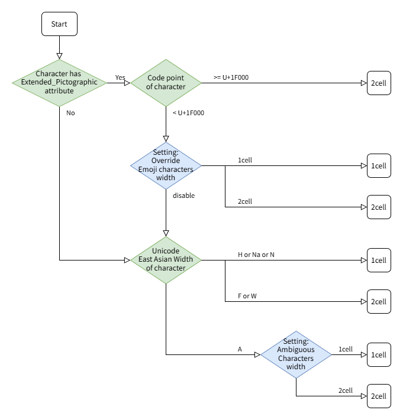

Encoding
- receive
-
ホストから送られてくる漢字コード。
使用可能文字コードは文字コードページを参照ください。
- transmit (Use different code)
-
送出する漢字コード。
使用可能文字コードは文字コードページを参照ください。
Unicode
Ambiguous Characters width
1 Cell または 2 Cell を選択します。
Tera Term の接続先が想定している文字幅を指定します。
East_Asian_Width特性とセル数についてを参照ください。
Tera Term が描画する文字の幅については描画幅に合わせてリサイズしたフォントを描画を参照ください。
Encoding-receive プルダウンを変更すると、その漢字コードで一般的な文字幅で上書きされます。しかし、その文字幅でなければならないというわけではありません。フォントなどの理由により、使いたい幅を選択してください。
Override Emoji Characters width
チェックすると、絵文字属性のある文字は East_Asian_Width特性を置き換えて文字幅を設定します。
絵文字のセル数についてを参照ください。
- コードポイント U+1F000 以上の絵文字は常に2Cell(全角)として扱います。
- コードポイント U+1F000 未満の絵文字は
- 2cellが選択されたとき
- 2Cell(全角)として扱う
- 1cellが選択されたとき
- 1Cell(半角)として扱う
DEC Special Graphics
DEC Special Graphics(DEC特殊グラフィック)の
表示方法を指定します。
- UnicodeをDEC Special Graphicsへマッピングする
-
UnicodeをDEC Special Graphicsへ置き換え、"Tera Special" フォントを使用して表示します。
DEC Special Graphicの文字幅は1cell(half-width)となります。
変換する文字種を指定できます。
UnicodeからDEC Special Graphicsへのマッピングを設定するも参照してください
- 罫線素片(U+2500-U+257F)
- Punctuation, Block Elements, Shade
- 中点(U+00B7,U+2024,U+2219)
- DEC Special GraphicsをUnicodeへマッピングする
-
DEC Special GraphicをUnicodeへ置き換え、VTウィンドウのフォントを使用して表示します。
Unicodeで表示する文字の文字幅は、文字毎に異なり
Ambiguous Characters width 設定で変化します。
- DEC Special Graphicsをマッピングしない
-
DEC Special Graphicsは "Tera Special" フォントを使用して表示し、
Unicodeの置き換えは行いません。
Japanese JIS
Reveive
- Half-width kana
-
ホストから送られてくる"半角"片仮名コードが 7 bit で表現されている
(SO/SI を用いたシフト制御を用いている)場合に選択してください。
Kanji (receive) が JIS の場合のみ有効です。
Transmit
- Half-width kana transmit
-
送出する"半角"片仮名コードを7bitで表現する
(SO/SI を用いたシフト制御を用いる)場合に選択してください。
Kanji (transmit) が JIS の場合のみ有効です。
- Kanji-in
-
Kanji (transmit) が JIS のときに使用するエスケープシーケンス
(漢字コードを G0 に指示するシーケンス。
^[$@ または ^[$B )。
ホストから送られてくるエスケープシーケンスはどちらでも構いません。
- Kanji-out
-
Kanji (transmit) が JIS のときに使用するエスケープシーケンス
(ASCII または JIS ローマ字コードを G0 に指示するシーケンス。
^[(B または ^[(J )。
ホストから送られてくるエスケープシーケンスはどちらでも構いません。
注意: ^[(H は初期設定では選択できません。
→ ^[(H を選択可能にする。
Unicode設定
文字幅(セル数)について
Latin-1 などシングルバイト文字コードの文字幅は1cellです。
Shift_JIS などのダブルバイト文字コードの文字幅は、1バイト文字は1cell, 2バイト文字は2cellです。
Unicode では1つの文字の文字幅が場合によって変化します。
例えば、"§"(section sign,節記号,セクションマーク) の文字コードは次のようになります
| code | character code(code point) | cell |
|--------------------|----------------------------|--------|
| ISO8859-1(Latin-1) | 0xA7 | 1 |
| Shift_JIS(CP932) | 0x8198 | 2 |
| KS5601(CP949) | 0xA1D7 | 2 |
| Big5(CP950) | 0xA1B1 | 2 |
| BG2312(CP936) | 0xA1EC | 2 |
| Unicode | 0xA7 (U+00A7) | 1 or 2 |
マルチバイト文字コードを使用していた環境(CJK)では 2cell で、
その他の環境では 1cell で表示すると自然に使用できます。
文字幅が変化する文字種をAmbiguous(曖昧)といいます。
詳しくはEast_Asian_Width特性とセル数についてを参照ください。
表示される文字について
Tera Term のリポジトリにテスト用テキストがあるので表示してチェックできます。
- Unicode(漢字)の文字幅
"wget https://github.com/TeraTermProject/teraterm/raw/main/tests/unicodebuf-east_asian_width.txt -O -"
- Unicode絵文字の文字幅
"wget https://raw.githubusercontent.com/TeraTermProject/teraterm/main/tests/unicodebuf-text-emoji.txt -O -"
次のことに注意してください
- フォントはそのまま、または、拡大/縮小して表示されます。
フォントの設定を参照ください
- Tera Termの扱う文字幅と、ホストが意図している文字幅が異なることがあります。
プログラム、ライブラリ例
- テキストエディタ(vim,emacs,nanoなど)
- ビュア(more,less,lvなど)
- bashなどに組み込まれているreadlineライブラリ(行編集ライブラリ)
- aptitudeなどに組み込まれているcursesライブラリ(端末制御ライブラリ)
- 指定フォントに表示したい文字が収納されていないかもしれません。
- 表示する文字(指定文字のグリフ)が存在しない場合
OSのよって黒い点「・」(例)が描画されます。OSのバージョンによっては他の表示になるかもしれません。
- OSのバージョンによっては、自動的に他のフォントを使って描画されます。
この機能をフォントリンクと呼びます。
East_Asian_Width特性と文字幅(セル数)について
Unicodeでは文字幅を5種類の特性に分類して、
East_Asian_Width特性(東アジアの文字幅)として定義しています。
文字幅の解釈には次の2種類があります。
- 東アジアの従来文字コードの文脈の場合
- 東アジア以外の従来文字コードの文脈の場合
これを表にすると次のようになります。
cells数(2=全角/1=半角)
| | 東アジアの | 東アジア以外の |
| 特性 | 従来文字コードの文脈 | 従来文字コードの文脈 |
| F(Fullwidth,全角) | 2 | 2 |
| H(Halfwidth,半角) | 1 | 1 |
| W(Wide,広) | 2 | 2 |
| Na(Narrow,狭) | 1 | 1 |
| A(Ambiguous,曖昧) | 2 | 1 |
| N(Neutral,中立) | 1 | 1 |
CJK環境では、
Ambiguousの文字幅を 2Cell にしたほうが自然です。
また、日本語フォントでは 2Cell でデザインされていることがほとんどだと思われます。
次のデータをもとに属性を決定しています。
https://www.unicode.org/Public/UCD/latest/ucd/EastAsianWidth.txt
絵文字の文字幅(セル数)について
絵文字属性は East Asian Width の特性とは別の文字特性です。
CJK環境では、East_Asian_Width特性と同様、
DBCS で 2byte の文字は 2Cell で扱うほうが自然です。
非CJK環境では、従来の文字コードでは全角は存在しなかったので、
多くの文字を半角として扱うのが自然です。
顔の絵文字など(コードポイントU+1F000以上)はUnicode以降の文字なので、全角としてあつかってよさそうです。
次のデータの Extended_Pictographic をもとに絵文字の判定を行っています。
https://www.unicode.org/Public/UCD/latest/ucd/emoji/emoji-data.txt
Neutralには絵文字が入っていて、1cellで描画すると日本では不自然な表示となります。
絵文字の時の文字幅を変更することで自然な表示とすることができます。
例
- "☺", U+263A
- WHITE SMILING FACE
- "❤", U+2764
- HEAVY BLACK HEART
文字幅の決定フロー
